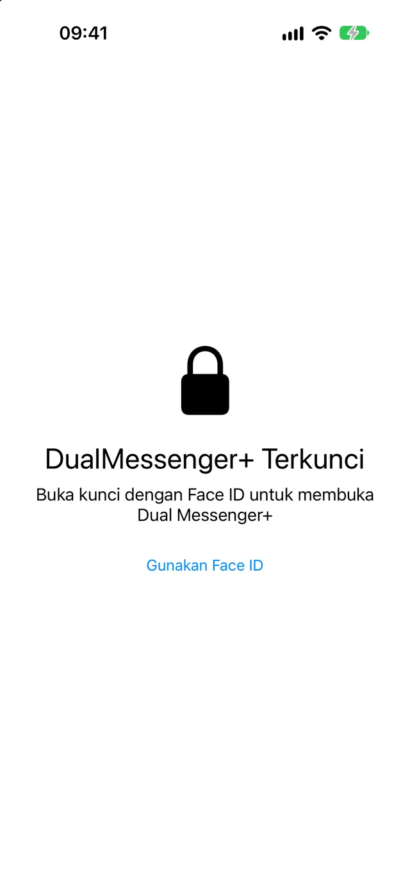
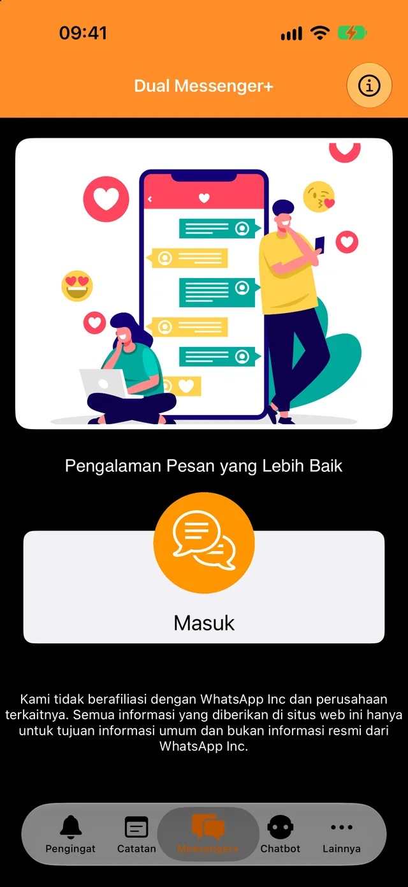
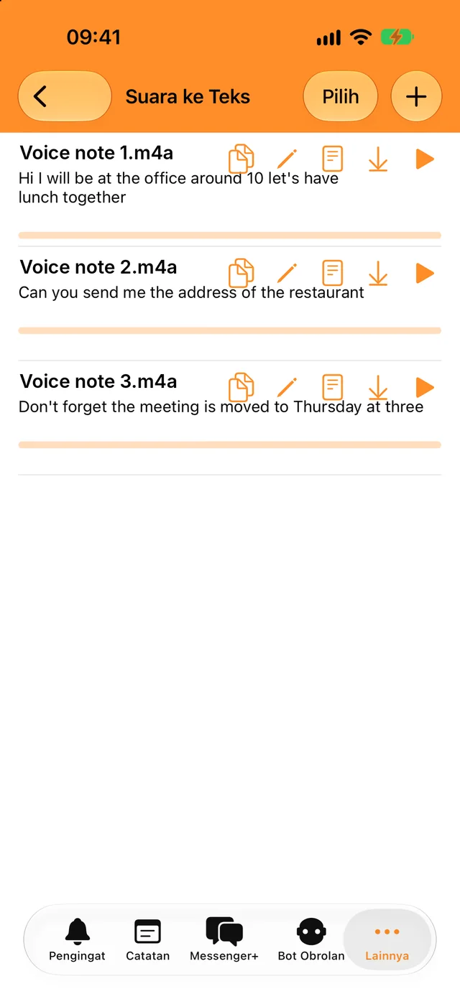
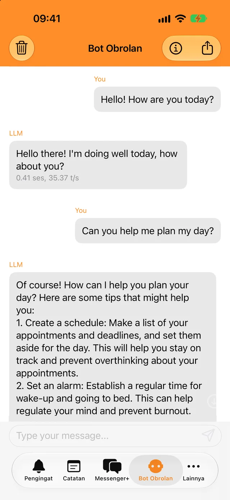
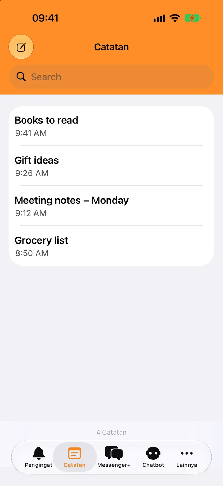

Kunci dengan Face ID atau kode sandi
Hanya Anda yang bisa membuka aplikasi dan chat Anda. Pilih apakah aplikasi terkunci seketika atau setelah beberapa menit.
Tambahkan akun kedua dalam hitungan detik dan pisahkan chat kerja dari chat pribadi.
Gratis diunduh. Untuk iPhone, iPad, dan iPhone Duo.

Kunci untuk chat Anda dan beberapa alat sehari-hari, semuanya dalam satu aplikasi.

Hanya Anda yang bisa membuka aplikasi dan chat Anda. Pilih apakah aplikasi terkunci seketika atau setelah beberapa menit.

Ubah pesan suara dan file audio menjadi teks dalam bahasa Anda, lalu salin teksnya ke mana saja.

Ajukan pertanyaan singkat, bahkan tanpa internet. Percakapan Anda dengan bot tidak pernah keluar dari ponsel.

Tulis hal-hal penting, temukan kembali lewat pencarian, dan dapatkan notifikasi saat pengingat tiba waktunya.
Anda memerlukan ponsel yang berisi akun WhatsApp kedua Anda, hanya sebentar.
Ketuk Masuk. Kode QR akan muncul di layar.
Buka Pengaturan, lalu Perangkat Tertaut, dan ketuk Tautkan Perangkat.
Arahkan ponsel itu ke kode QR. Chat Anda akan terbuka di Dual Messenger+.
WhatsApp membuat perangkat tertaut tetap masuk selama Anda menggunakan WhatsApp di ponsel setidaknya sekali setiap 14 hari.
Dual Messenger+ tidak memiliki server yang melihat pesan Anda. Tidak ada akun yang perlu dibuat, dan aplikasi ini tidak memiliki iklan maupun pelacak.
Catatan, pengingat, rekaman, dan percakapan dengan bot disimpan di iPhone atau iPad Anda.
Anda tidak perlu memberi kami nama, alamat email, atau nomor telepon.
Face ID dan Touch ID ditangani oleh perangkat Anda. Aplikasi tidak pernah menerima data biometrik.
Ada pertanyaan, ide, atau masalah dengan aplikasi? Tulis kepada kami.
info@dualmessengerplus.com